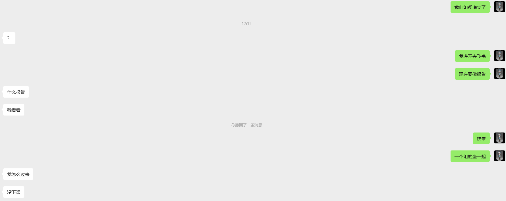
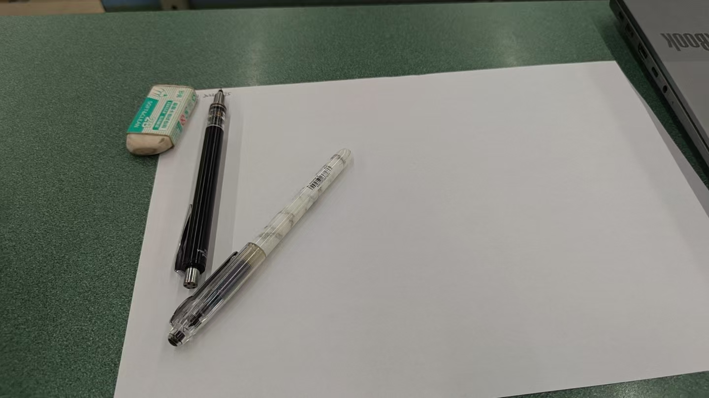

2026年3月24日，大三下学期攻坚阶段常规教学日。当日无重大事件发生，整体行程围绕课程学习、作业攻坚展开，期间遭遇离散数学证明体系攻坚瓶颈，同时在智慧土木课程中遭遇小组人员缺位突发状况，各项任务按既定方案推进处置。
一、上午行程：课程推进与后勤保障
上午完成云计算课程教学任务，课后按标准流程完成就餐保障，随即转入离散数学作业攻坚环节。本次作业以真命题证明为核心内容，题型结构以证明题为主，对逻辑体系与基础定义掌握程度提出刚性要求。
经实战检验，个人数学证明能力存在明显短板，定理公式运用不熟练，基层定义拆解能力不足，证明过程严谨性缺失，多项题目无法形成有效解题思路，攻坚行动陷入停滞。
二、攻坚瓶颈：基础体系薄弱，任务完成率不足
截至当日晚间，12道证明题仅完成7道，完成率不足60%，剩余题目无有效推进路径。经深度复盘，问题根源在于核心概念与基础定义未形成体系化认知，仅停留在表面记忆层面，未实现本质理解。
针对该瓶颈，制定专项整改方案：次日启动已完成题目订正工作，依托答案解析逆向推导证明逻辑与核心定义，夯实理论根基，完成整改后再推进剩余题目攻坚，确保任务质量达标。

图：课堂应急联络记录影像（摄影：@LuoryHan）
三、下午突发状况：小组作业单人值守处置
智慧土木课程期间，发生小组人员缺位突发状况。五人编制小组仅本人按时到课，恰逢课程部署随堂小组报告任务，要求全员到场协同完成。
现场按应急方案处置，领取任务材料后通过线上渠道联络组员，督促其尽快到场协同作业。鉴于大三下学期整体任务繁重，人员缺位具备客观因素，但该状况造成现场处置压力显著上升，任务推进面临严峻挑战。

图：智慧土木课程现场影像（摄影：@LuoryHan）
四、应急驰援：两名组员到场完成任务闭环
在任务推进关键节点，俞、李两名组员及时驰援到场，小组作业恢复正常推进流程，最终完成任务闭环。本次驰援有效缓解现场处置压力，为后续课后作业协同开展奠定基础。
五、客观评述：行为失范与责任担当并存
从客观标准评判，两名组员未履行按时到课义务，造成单人值守的被动局面，行为层面存在明显失范，对任务推进造成实质性不利影响，该事实不容回避。
但二人在接到联络后及时响应驰援，体现出对协同任务的基本担当，认可其响应行动的实际价值，本次事件按客观标准据实评述，不附加主观情感倾向。
“正视短板，夯实根基，客观处置，刚性推进。”
六、次日部署：专项整改，刚性落实学习任务
次日工作重心聚焦离散数学专项整改，严格执行订正计划，逆向拆解定义与逻辑体系，补齐基础短板。坚持问题导向，以刚性标准落实学习任务，确保证明体系能力实现实质性提升。
后续将持续强化时间管理与任务统筹，以攻坚姿态应对大三下学期各项教学任务，确保各项工作有序推进、落地见效。